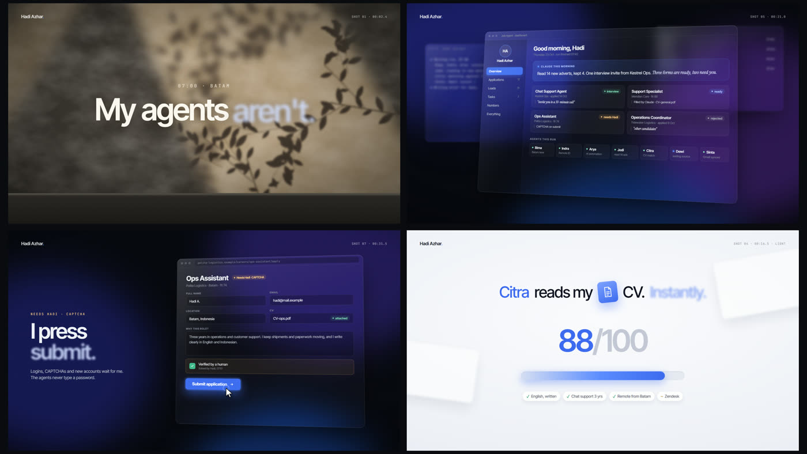
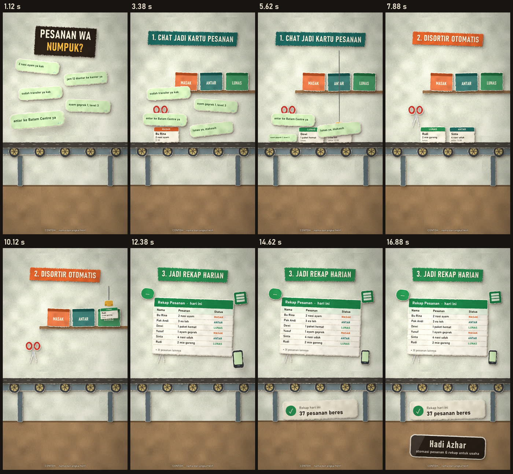

Video peluncuran produk, gaya filmProduct launch video, cinematic style
Untuk produk yang ingin tampil premium: latar sinematik, panel kaca yang melayang, teks yang muncul kata per kata. Contoh ini menceritakan sistem cari kerja buatan saya sendiri. Nama perusahaan, iklan, dan email di dalamnya rekaan.For products that want to look premium: a cinematic backdrop, floating glass panels, text that appears word by word. This one tells the story of a job-search system I built for myself. The company names, adverts and emails in it are made up.
kegunaanwhat it's forVideo pembuka untuk halaman produk, iklan, atau unggahan peluncuran.An opening video for a product page, an ad, or a launch post.
Video penjelas sistem, gaya stop motionSystem explainer videos, stop motion style
Cara kerja aplikasi atau spreadsheet diceritakan dalam 12 sampai 18 detik, dari masalahnya sampai hasilnya. Nama dan angka di video ini cuma contoh.How an app or a spreadsheet works, told in 12 to 18 seconds, from the problem to the result. Names and numbers in these videos are only samples.
kegunaanwhat it's forPromosi, onboarding, atau presentasi ke klien.Promotion, onboarding, or a pitch to a client.
Video promo stop motionStop motion promo videos
Gaya potongan kertas, sekitar 8 detik, format vertikal 9:16. Ketiga merek di bawah ini fiktif, sengaja dibuat untuk contoh.Paper cut-out style, about 8 seconds, vertical 9:16. All three brands below are made up for these samples.
kegunaanwhat it's forKonten TikTok dan Reels dari produk dan foto Anda sendiri.TikTok and Reels content made from your own product and photos.
Aplikasi web + video tutorialnyaA web app and its tutorial video
Contoh aplikasi cek data anggota: ketik nama, langsung tahu terdaftar atau belum. Videonya dibuat otomatis dari aplikasinya, lengkap dengan kursor, zoom, dan teks langkah.A sample member check app: type a name and see straight away whether that person is registered. The video is generated automatically from the app itself, with the cursor, zooms and step captions.
Versi aslinya pakai Google Sheets di akun pemilik data. Jadi tidak ada biaya hosting, dan datanya tetap di tangan Anda.The real version runs on Google Sheets in the data owner's own account. So there is no hosting bill, and the data stays in your hands.
bisa dicoba dari HPworks on your phone too
kegunaanwhat it's forAdmin tidak perlu buka spreadsheet untuk menjawab satu pertanyaan.Nobody has to open the spreadsheet to answer one question.
Di balik layar: cara videonya dibuatBehind the scenes: how the videos are made
Semua video di halaman ini dibuat dengan kode, bukan rekam layar atau aplikasi edit video.Every video on this page is made with code, not with screen recording or a video editor.
- Pelajari brief dan referensi.Study the brief and references. Saya kumpulkan beberapa video yang gayanya Anda suka, lalu saya pelajari per frame: tempo, cara teks muncul, transisi.I collect a few videos in a style you like and study them frame by frame: pacing, how the text comes in, transitions.
- Storyboard dan gambar contoh.Storyboard and sample frames. Sebelum render, Anda dapat urutan adegan per detik dan 3 sampai 4 gambar contoh. Revisi di tahap ini paling murah.Before rendering, you get the scene order second by second and 3 to 4 sample frames. Changes are cheapest at this stage.
- Bangun adegan dengan kode.Build the scenes in code. Tiap frame digambar dari kode (HTML dan Python), memakai tampilan produk Anda sendiri, bukan template.Every frame is drawn from code (HTML and Python), using the look of your own product, not a template.
- Musik dan efek suara.Music and sound effects. Dibuat sendiri dari kode, jadi tidak ada urusan lisensi musik.Also made from code, so there is no music licence to worry about.
- Cek per frame, lalu kirim.Check every frame, then deliver. Teks terpotong, tumpukan, dan kontras dicek di titik-titik transisi sebelum video final dikirim, lengkap dengan teks siap posting.Cut-off text, overlaps and contrast are checked at every transition before the final video goes out, together with a caption ready to post.


kegunaanwhat it's forRevisi cukup ubah kode, lalu render ulang.A revision means editing the code and rendering again, not starting over.